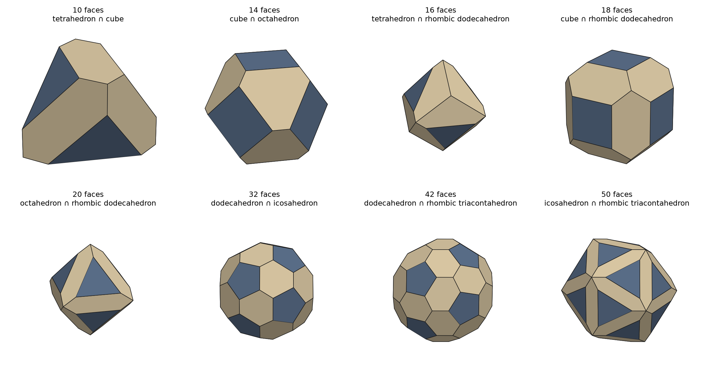

Fair Dice and the Regular Polygons Hidden in Their Vacuus
Abstract. Cut one Platonic or Catalan solid by another whose faces point along different symmetry axes, and let the second set of faces move out from the centre: one parameter μ runs a line of solids with two kinds of face. On each of the eight lines whose two face families both lie on symmetry axes we find the member on which every face is equally likely, in the sense that it subtends the same solid angle 4π/N from the centre. These are fair dice with 10, 14, 16, 18, 20, 32, 42 and 50 faces, not face-transitive. On every line the fair member lies just beyond the member whose faces all touch one sphere. For the 14-face die the values are exact: the cut is μ = 1 + √(2 tan(π/14) tan(2π/7)) in the cube's scale, and the ratio of inradius to circumradius is cot(2π/7). The dice with 20 and 32 faces have their radii in the fields of the regular 10-gon and 16-gon with √2 and √5; the 20-face die has (R/r)² = 11/3 + 2√2 − √5 − (2/3)√10, golden and silver together in a solid of cubic symmetry. The dice with 10, 16 and 18 faces have radii in no regular polygon's field. Yet every one of the eight shows a regular polygon in its Vacuus: the sloping plates through its edges and the centre meet a symmetry axis at 7π/30, 2π/7, 5π/24, 5π/18, π/5, 5π/16, 13π/42 and 9π/50, a whole multiple of π/N on the six lines without a tetrahedron, and of π/3N on the two with one. We conjecture that this holds for every fair die of this kind.
A die is fair when every face is equally likely. A cube is fair because its symmetry carries any face to any other. Diaconis and Keller called such dice fair by symmetry and showed that dice can also be fair by continuity: let one kind of face grow at the expense of another, and somewhere the chances pass through equality [1]. Rawlins designs such dice by making every face subtend the same solid angle from the centre, and gives examples of 5, 7, 9, 10 and 11 faces [2].
This paper finds those points exactly on the simplest lines of solids with two kinds of face, and reads them with the Vacuus, the set of plates through the centre and each edge [3]. On the line from the octahedron to the cube the fair member is the fair 14-face die (DICTO's Lucky 7). It sits next to the solid on which all 14 faces touch one sphere, DICTO's cube–octahedron solid of The Golden Ladder [4]; the two look almost alike. The hidden structure is the theme: a fair die shows on its surface only squares, triangles, pentagons and hexagons, but its Vacuus hides a regular polygon fixed by the number of faces.
Let A and B be two sets of unit vectors, each one orbit of a finite rotation group with reflections, each along a symmetry axis: the 4 face directions of the tetrahedron, the 6 of the cube, the 8 of the octahedron, the 12 of the rhombic dodecahedron (cubic and tetrahedral groups), and the 12 of the dodecahedron, the 20 of the icosahedron and the 30 of the rhombic triacontahedron (icosahedral group). The line is
S(μ) = { x : a·x ≤ 1 for a in A, b·x ≤ μ for b in B },
with N = |A| + |B| faces where both kinds are present. The family with fewer faces is A. At μ = 1 every face touches the unit sphere: the equal-depth member. Among solids with the same face directions it has the largest isoperimetric quotient 36πV²/S³ (Lindelöf [5]). The eight lines on which both families lie on axes are T ∩ C, C ∩ O, T ∩ RD, C ∩ RD, O ∩ RD, D ∩ I, D ∩ RT and I ∩ RT (T tetrahedron, C cube, O octahedron, D dodecahedron, I icosahedron, RD rhombic dodecahedron, RT rhombic triacontahedron). Lines with faces off the axes form infinite families and are not treated here.
The model of a roll is the solid-angle model: a face's chance is the solid angle it subtends from the centre, divided by 4π, the rule of [2]. The centre is the centroid, fixed by the symmetry group. Solid angles are computed by Van Oosterom and Strackee's formula for a triangle [6].
Proposition 1 (existence). Exact. Each of the eight lines has a member on which all N faces subtend 4π/N.
Proof. The faces of one family are congruent under the group, so each subtends 1/|A| or 1/|B| of the family's total. Where the B faces first appear, the A faces hold the whole sphere, 4π/|A| > 4π/N each; where the A faces vanish, they hold 0. The share is continuous in μ, so it passes 4π/N, and then the B faces hold 4π/N each too. This is Diaconis and Keller's continuity argument [1]. ∎
Table 1 gives the fair members; the faces are drawn in Figure 1. Each value was found at 140 digits, with the checks that every face of each family has the same solid angle (to 10⁻⁶⁰), that the shares are 1/N and that they sum to 1. Uniqueness is proved for C ∩ O (Theorem 2 (a)); on the other lines one crossing was found and uniqueness is not claimed.
| N | line | μf | faces | r/R | hidden angle | × π/N | (R/r)² field |
|---|---|---|---|---|---|---|---|
| 10 | T ∩ C | 1.0659165951 | 3, 6 | 0.5416467591 | 7π/30 | 7/3 | none (not Galois) |
| 14 | C ∩ O | 1.0141631690 | 4, 6 | 0.7974733889 | 2π/7 | 4 | Q(cos 2π/7) |
| 16 | T ∩ RD | 1.0692105364 | 3, 5 | 0.6613354032 | 5π/24 | 10/3 | none (not Galois) |
| 18 | C ∩ RD | 1.0312505091 | 4, 6 | 0.7917538694 | 5π/18 | 5 | none (not Galois) |
| 20 | O ∩ RD | 1.0370247603 | 3, 6 | 0.6818610396 | π/5 | 4 | Q(cos 2π/10, √2) |
| 32 | D ∩ I | 1.0043619497 | 5, 6 | 0.9196689969 | 5π/16 | 10 | Q(cos 2π/16, √5) |
| 42 | D ∩ RT | 1.0072683224 | 5, 6 | 0.9274314879 | 13π/42 | 13 | not found (degree > 24) |
| 50 | I ∩ RT | 1.0155843036 | 3, 6 | 0.8375974356 | 9π/50 | 9 | not found (degree > 24) |

Just past the sphere. Computed. On all eight lines μf > 1: the fair die is the equal-depth member with the larger family's faces moved slightly outward, by between 0.4% (D ∩ I) and 6.9% (T ∩ RD). Touching one sphere does not make the chances equal, but it comes close: the sphere is the perfect die, and the equal-depth member is the roundest of its line.
Theorem 2 (the fair 14-face die). Exact. In the cube's scale, |x|, |y|, |z| ≤ 1 and |x| + |y| + |z| ≤ S, let c = cos(2π/7) and T = tan(π/14)·tan(2π/7).
(a) Exactly one member of the line 1 < S < 3 is fair: Sf = 1 + √(2T) = 1.7565821359…, a root of S⁶ − 6S⁵ − 3S⁴ + 52S³ − 97S² + 74S − 13 (irreducible); μf = Sf/√3.
(b) With b = Sf − 1, b² = 2T = 1/c² − 2, and r/R = cot(2π/7) = 0.797473…; (R/r)² = 19 − 8c − 32c², in the field of the regular heptagon.
Proof. (a) For 1 < S ≤ 2 the corners are the permutations of (±1, ±b, 0), and a square subtends 4·arctan(b²/(2√(1 + b²))), which rises strictly from 0 to 4·arctan(1/(2√2)) > 4π/14; for 2 ≤ S < 3 the square grows into an octagon as nested sets and its share rises on to 1/6. So the crossing is unique, at b²/(2√(1 + b²)) = tan(π/14), that is b⁴ − 4t²b² − 4t² = 0 with t = tan(π/14), so b² = 2t(t + sec(π/14)) = 2t·tan(π/4 + π/28) = 2T. The minimal polynomial is by exact algebra. (b) c is a root of 8c³ + 4c² − 4c − 1 and T = 9 − 4c − 16c²; then c²(2T + 2) − 1 = 20c² − 8c³ − 32c⁴ − 1, which that polynomial reduces to 0. The squares lie at distance 1 and the hexagons at Sf/√3 = 1.0142, so r = 1 and R² = 1 + b² = (1 − c²)/c², so r/R = cot(2π/7), and 1/c² − 1 = 19 − 8c − 32c² by the same reduction. ∎
The heptagon comes from the face count: 4π/14 = 2π/7. Its appearance in the lengths, not only in the angles, is what Theorems 3 and 4 test on other lines.
Theorem 3 (the golden and silver 20-face die). Certified. The fair member of O ∩ RD has (R/r)² = 11/3 + 2√2 − √5 − (2/3)√10 = 2.1508407071…, root of 9x⁴ − 132x³ + 412x² − 432x + 144, which is irreducible over ℚ, factors into quadratics over each of ℚ(√2), ℚ(√5) and ℚ(√10), and splits over ℚ(√2, √5) = ℚ(cos 2π/10, √2).
Status. The polynomial was identified by PSLQ from the value at 140 digits; the closed form, its root property and the factorisations are exact. That the polynomial is the minimal polynomial of (R/r)² rests on the 140-digit agreement; a hand proof as in Theorem 2 is open.
So a die with only cubic symmetry, made fair, has φ in its radii: √5 enters through fairness alone, beside the √2 of its frame.
Theorem 4 (the 32-face die). Certified. The fair member of D ∩ I has R² = 35 − 20√2 + 8√10 − 14√5 + (−40 + 30√2 + 16√5 − 12√10)·√(2 + √2) = 1.1823250951…, r = 1, root of x⁸ − 280x⁷ + 10220x⁶ − 121800x⁵ + 483350x⁴ − 609000x³ + 255500x² − 35000x + 625, irreducible over ℚ and split over ℚ(cos 2π/16, √5). Status as for Theorem 3.
Proposition 5 (dice with no polygon in their lengths). Certified. For the fair members with 10, 16 and 18 faces, (R/r)² has a minimal polynomial of degree 8, 8 and 6 with both real and non-real roots (6 of 8, 6 of 8, 4 of 6 real). Its field is therefore not Galois over ℚ, so it lies in no cyclotomic field and in no field of a regular polygon (Kronecker–Weber). For 42 and 50 faces no polynomial of degree ≤ 24 with coefficients below 10⁹ was found at 140 digits.
Status. As for Theorem 3; once the polynomial is right, the count of real roots is exact.
The Vacuus of a solid is the set of its plates: for each edge, the plane through the edge and the centre [3]. On each fair die some plates lie on mirrors of the symmetry group, at the familiar angles π/2, π/3, π/4 and π/5 to its axes. The others slope; on the 10-face die they are single fins, one edge each. Their angle to a symmetry axis is the hidden angle of Table 1.
Observation 6 (the hidden angles). Computed. On each of the eight fair dice the sloping plates make a rational multiple of π with a symmetry axis: 7π/30, 2π/7, 5π/24, 5π/18, π/5, 5π/16, 13π/42 and 9π/50 for N = 10, 14, 16, 18, 20, 32, 42, 50. Each was identified by PSLQ on (angle, π) at 100 digits, denominators ≤ 200; the 14-face value 2π/7 is exact by Theorem 2 (b), where the plate normal is (c, c, bc) up to symmetry.
Conjecture A (the hidden N-gon). On the fair member of an axis line with N faces, the sloping Vacuus plates make an angle kπ/N with a symmetry axis, k a whole number, and kπ/3N when one family is the tetrahedron's. The die hides the regular N-gon (3N-gon) in its Vacuus.
Why it should hold. Fairness fixes a solid angle, 4π/N. By Girard's theorem [7], the solid angle of the cone from the centre over an n-sided face is the sum of the angles between consecutive plates round it, less (n − 2)π. Round a face on an axis these angles are equal, so each is a rational multiple of π fixed by N. What remains is the step from these angles to the angle with the axis, which we have not proved in general. The lengths follow the angles only when a square root on the way stays in a polygon's field: Theorems 2 to 4 and Proposition 5 show that this happens for 14, 20 and 32 faces and not for 10, 16 and 18.
So every fair die of the eight is a polygon die in its Vacuus, and three are polygon dice in their lengths too. The polygon is never a face: it shows only in the plates.
Known and used. Fairness by continuity, and the existence argument of Proposition 1 (Diaconis and Keller [1]); the equal-solid-angle rule (Rawlins [2]); the solid angle of a triangle (Van Oosterom and Strackee [6]); Lindelöf's theorem [5]; Girard's theorem [7]; the Kronecker–Weber theorem; the solids of the lines (Platonic, and Catalan's rhombic dodecahedron and rhombic triacontahedron); the Vacuus [3]; DICTO's equal-depth cube–octahedron solid [4].
Claimed here, not found in the sources checked. The fair members of the eight axis lines and their values; the exact value of Theorem 2 and its heptagonal identities; the radii of Theorems 3 and 4 and the field split of Proposition 5; the position just past the equal-depth member; the hidden angles of Observation 6 and Conjecture A.
Sources checked (18 November 2026): Diaconis and Keller [1], read in full; Rawlins [2], read (claims and examples); Riemer, Stoyan and Obreschkow, arXiv:1302.3925, and Yong and Mahadevan, arXiv:1008.4559, abstracts; the full text of the 348 papers of our reference library, searched for "fair dice", "14-sided", "14-face" and tan(π/14); a web search for fair dice by equal solid angles on truncated polyhedra, which found Rawlins's patent, The Dice Lab's design page, M. Dominus's blog (2007) and A. P. Goucher's "Fair dice" (cp4space, 2013: a fair triangular prism and the pseudo-deltoidal icositetrahedron, no cut Platonic or Catalan solids); OEIS, searched for the digits of Sf, T, b/(1 − b) and cot(2π/7), with no entry. Not checked: McCooey's catalogue of polyhedra.
DICTO · dictospheres.com